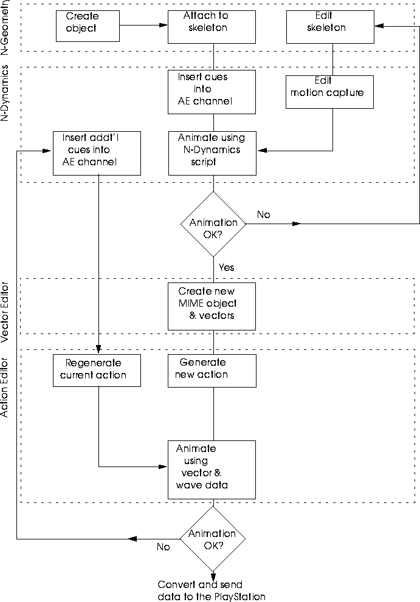
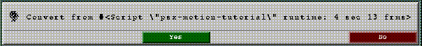
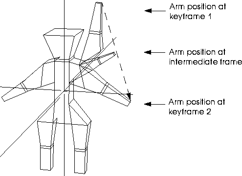
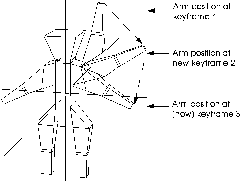
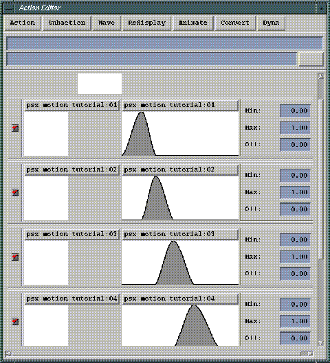
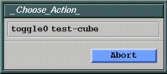
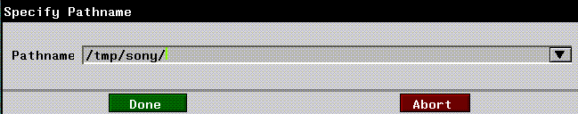

[N-World Contents] [Book Contents] [Prev] [Next] [Index]
MIME: Using Motion Capture Data
One of the fastest ways to obtain realistic motion animation is to use motion capture data to drive the movement of your objects. This section describes how you can combine the realism of motion capture animation and MIME technology to create stunning animations on the Sony PlayStation.
Animating with Motion Capture Data
Charecter animations in MIME format are subject to the following constraints:
The MIME format is an appropriate choice for animating sequences where displacements are required, but which are otherwise "static." For example, if you wanted to animate a character performing a spinning back kick with appropriate muscle bulging, you'd attach a single skin model (with displacements) to a skeleton, animate the model by attaching a motion capture file to the skeleton, use PlayStation Express to convert the script, then export the animation to the Sony PlayStation.
If you are using motion capture data from suppliers like Acclaim and BioVision, you can animate a "skin" using that data and send the entire animation sequence over to the PlayStation.
Creating the Animation
Figure 4.1 is shows the basic workflow for the process of MIME skeletal animation.

Figure 4.1 Creating a MIME animation using motion capture data
By the time you're ready to send your data to the PlayStation, the single skin object should have been attached to the skeleton and animated.
Loading the Sample Script
1. Open N-Dynamics.
2. For this tutorial, load the following script from N-Dynamics:
/usr/local/ngc/demo/psx/psx-motion-tutorial.script
- This script contains an N-Geometry model attached to a skeleton that is animated with an Acclaim motion capture file.
Analyzing the Script
There are four channels in the script:
- Note. The Translate option must be set to No when sending a motion-based MIME animation to the Sony PlayStation.
Animating the Script
3. (CLICK-L) on the Animate button.
- The skeleton and skin are animated in the N-Geometry window. The cat walks across the N-Geometry window.
Playback your Animation
4. (CLICK-L) on the Playback button.
- Your animation is played back in real time in the playback window.
Open the Vector Editor
5. Open the Vector Editor.
6. (CLICK-L) on Create New MIME Object.
7. (CLICK-L) on the skin attached to the skeleton.
- This creates a new MIME object for PlayStation Express to work with.
8. Close the Vector Editor.
Open the Action Editor
9. (CLICK-L) on Action Generate under the Dyna menu.
- A dialog box similar to the one below appears:

Figure 4.2 Converting the animation into an action
10. (CLICK-L) on OK to convert the script.
- This does not affect your N-Dynamics script.
The Dynamics script is animated again; this time, however, the script is only animated at the frames where cues were inserted in the MIME Animation channel of the script. For each of those keyframes, a subaction is created in the Action Editor.
Reanimating with PlayStation Express
11. (CLICK-L) on Animate Action under the Animate menu.
- The action reanimates, this time using the vector and wave information as "keyframes" to position the skeleton and skin.
- Note. You can stop the animation by clicking on the ABORT button in the Action Editor.
Adding Keyframes
If you look at the individual subactions in the Action Editor, you can see the vector, or "pose" saved for the skin at each specified keyframe. As mentioned above, the PlayStation animates the skeleton between keyframes using a linear interpolation method (much like relative displacements), as described in the N-Geometry Reference Guide.
Linear interpolation between keyframes can cause skins to deform in ways you might not intuitively expect; because every vertex moves from its position at one keyframe to its position at the next, you can get "squashing" effects, particularly in limbs that are rotating.
If you see any of this unwanted behavior, you can add keyframes to the section of the animation where it is happening. Look at the example below:

Figure 4.3 With linear displacements, vertices move from one keyframe to the next ina linear path, sometimes producing "squashing" effects
If you add more keyframes, the interpolation is still linear, but the change in position is not so drastic, and your animation appears smoother:

Figure 4.4 Adding more keyframes takes more "slices" from the motion capture file, making the animation more closely resemble the original
To add more keyframes:
12. Open N-Dynamics.
13. Open the MIME Animation channel.
14. Add cues where you want them in the curve channel inside the MIME Animation channel.
- You can use the "s" hot key to add the cues at the position of the mouse.
15. Open the Action Editor.
16. (CLICK-L) on Action Regenerate under Dyna.
- Action Regenerate rereads the N-Dynamics script, deletes the old action, and converts the N-Dynamics script into a new action.
17. Choose the action you want to regenerate from the list of actions that appears.
18. (CLICK-L) on OK when asked if you want to delete the old action:
19. (CLICK-L) on OK when prompted if you want to convert the N-Dynamics script again.
- The Action Editor creates a new set of subactions; again, animating the script only at the position of keyframe cues in the Action Editor channel of the N-Dynamics script.
- Scroll up and down in the Action Editor to review each of the subactions:

Figure 4.5 The first four subactions in our MIME animation example
Reanimate & Playback
Now, reanimate using the newly created keyframes.
20. (CLICK-L) on Animate Action under Animate.
- The Action Editor animates the character using the vector and wave data in the newly created subactions.
21. (CLICK-L) on Playback under Animate.
- The animation plays back in the Action Editor playback window.
You can repeat this process as many times as needed, adding keyframes, removing others, and using Action Regenerate to rebuild your animation until it looks just right.
Setting up the PC to Receive the Animation Data
22. On the PC, execute the following commands to start the PSX software.
cd c:\psx
psx
- When the software starts, a list of datasets that can be animated is displayed.
23. Type "n" to create a new dataset.
24. Enter the name for the new dataset at the prompt:
DATASET: cube-test
26. Locate the new dataset's number in the list of datasets and enter it at the prompt, followed by RETURN.
- The following commands are displayed:
Current DATASET: cube-test
1) Execute MIME-DATASET
2) Execute MIME-DATASET with WAVE-file
3) Playback TOD file
4) link/filt
5) Recv. files
6) QUIT
Please Input Number:
- This command starts the PC telnet application, and places the PC in FTP Server mode, where it can receive data sent over from the SGI.
Sending Data to the PlayStation
We're ready to send the animation and MIME object data to the PC from the SGI.
28. In The Action Editor, (CLICK-L) on Convert>Convert and Send Action.
- (CLICK-L) on the action you want to convert from the pop-up menu which appears:

Figure 4.6 Select an action to convert and send to the PC
29. In the dialog which appears, enter a directory for the Action Editor to write temporary files.
- During the conversion process, the Action Editor writes several temporary files to the specified directory. It's a good idea to specify the /tmp directory, or a subdirectory of /tmp, so that these temporary files will be deleted the next time you reboot your SGI.

Figure 4.7 Choose a directory for temporary files
30. When you (CLICK-L) on Done, the data are sent to the PC.
- Files are sent to the Action Editor Host specified in the N-Dynamics Options menu. When all the files have been sent the following prompt is displayed on the PC:
Finished sending data.
- (For more information about what files are written with the Convert and Send Action command, see "Convert and Send Action," on page 6-8. Other convert options are also described in the section"Convert," on page 6-8.)
31. Press ESC on the PC to exit from FTP server mode.
- The PSX menu appears again on the PC.
Animating the MIME Object
32. Press "4" to convert the .rsd file into a .tmd file.
- This is the format required for the PSX development kit.
33. Press "2" to animate the MIME object using the Wave data you created.
Exiting the PSX Program
34. Press "6" to exit from the current animation.
35. Press "Q" to exit completely from the PSX software.
Saving your Work
Make sure to save both the N-Dynamics script and the Action Editor data.
Saving your N-Dynamics Script
36. Open N-Dynamics.
37. (CLICK-L) on File>Save Script.
- Specify the directory in which you want to save your script and any objects it may reference. For more on saving scripts, see the N-Dynamics Reference Guide.
Saving the Action Editor Data
38. Open the Vector Editor, (CLICK-L) on Group>Save Group.
[N-World Contents] [Book Contents] [Prev] [Next] [Index]
 Another fine product from Nichimen documentation!
Another fine product from Nichimen documentation!
Copyright © 1996, Nichimen Graphics Corporation. All rights
reserved.